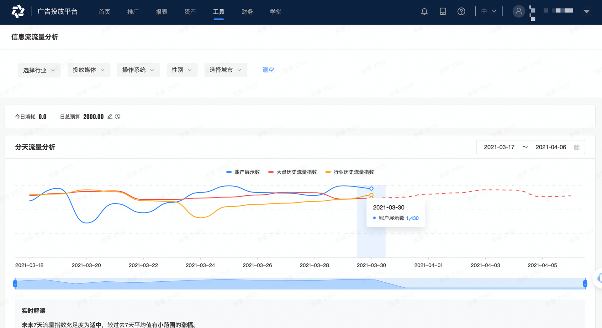
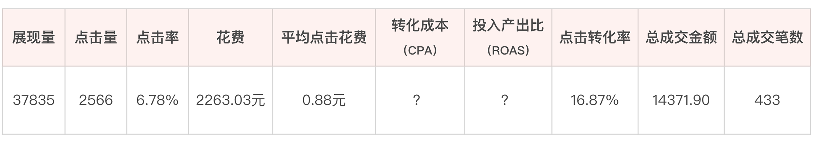

- 00 开篇词 作为一名互联网人，你为什么必须了解广告产品？.md.html
- 01 业务逻辑：广告产品的前世今生和商业模式是怎样的？.md.html
- 02 业务链条：广告主、媒体、第三方等分别如何看待广告产品？.md.html
- 03 头部玩家：从BAT到跳动的字节，广告产品有哪些变化与发展趋势？.md.html
- 04 产品体系：互联网大厂的广告产品存在哪些共性和区别？.md.html
- 05 变现模式：什么样的产品适合采用广告模式变现？.md.html
- 06 产品路线：大厂和小厂的广告产品发展路线有什么区别？.md.html
- 07 计价与效果（上）：如何制定合理的计价方式？.md.html
- 08 计价与效果（下）：如何制定合理的效果评估指标？.md.html
- 09 效果优化：如何一步步从提升曝光量深入到提升销量？.md.html
- 10 流量优化：如何兼顾广告收入和用户体验？.md.html
- 11 物料生产：如何满足广告主的创意需求？.md.html
- 12 精准定向：如何建立一个成熟的用户标签体系？.md.html
- 13 转化优化：互联网大厂如何利用算法优化广告效果？.md.html
- 14 程序化交易：程序化交易是否可以提升广告效果？.md.html
- 15 需求调研：广告产品潜在需求的调研流程是怎样的？.md.html
- 16 平台建设：如何从0到1建立一个完整的广告产品平台？.md.html
- 17 职业发展：新人入行，如何判断自己是否适合做广告产品？.md.html
- 18 团队建设：如何搭建一个高效的广告产品团队？.md.html
- 19 跨团队合作：产研团队和销售端、媒体端、市场端如何合作？.md.html
- 20 产品运营：不同发展阶段如何制定业务目标和运营策略？.md.html
- 21 广告产品彩蛋：课程答疑与推荐书目.md.html
- 结束语 你想要成为什么样的互联网广告产品人？.md.html
- 捐赠
08 计价与效果（下）：如何制定合理的效果评估指标？
你好，我是郭谊。
上一讲，我们学习了广告产品各种各样的计价和售卖方式，也掌握了CPM、CPC、CPA、eCPM等一系列重点指标的含义。广告产品在上线之前，一般要根据产品定位决定产品的计价方式和售卖方式，一旦定下来，最好不要频繁调整，便于广告客户给你的广告产品打上“标签”，知道在有什么需求的时候该购买哪一种。
但实际上，广告主在意的其实并不是表面上的广告价格或者花了多少购买预算，而是你的产品能够在多大程度上满足广告主的效果需求。广告效果优化，是广告收入提升的最终动力。所以，今天我们就重点来解决广告产品的效果评估问题。
广告产品的效果评估指标
按照广告主购买广告产品时的不同目的，我们可以把广告产品的效果评估指标分为以下几种：
- 按照曝光量评估：按照impression数据或CPM数量去评估。广告主在事件营销、品牌推广、新品推广时，往往会优先按照曝光量评估。例如，前面提过的京东618就是典型的事件营销。
- 按照点击量评估：按照CPC数量进行评估。一些单价较低、产品可替代性强的产品通常会选择按照点击量来评估。比如食品饮料类广告主，像农夫山泉、可口可乐等。除了保障曝光量，还会选择按照点击量评估。这些品类的消费者忠诚度都比较低，所以一方面要通过用户的点击量来评估用户是否对自己的品牌和产品产生了兴趣，另一方面要保障点击的数量，以便尽可能控制广告的推广成本。
- 按照点击率评估：按照点击率，也就是CTR进行评估。产品单价较高且很看重消费者忠诚度的产品一般会选择按照点击率来评估，比如欧莱雅、雅诗兰黛这些美妆品牌，在沟通过程中，我发现他们更倾向于按照点击率评估。因为他们可以承受更高的广告点击成本，而且点击率更能准确地评估用户是否对广告主的品牌及产品感兴趣。
- 按照转化量/转化率/转化成本评估：就像我们上一讲说的，广告主可以对转化进行自定义，定义为App激活、用户购买等等都可以。而且，绝大部分效果广告主，都希望按照转化量、转化率或者转化成本等指标，对广告产品的效果进行评估。
虽然主流媒体平台只接受按照CPM或CPC计价和收费，但是广告主会在实际的广告投放中，总结自己使用过的每一个媒体平台、每一个广告产品的转化效果，然后筛选出转化成本最低的广告产品，优先保障这部分的购买。当采购不到足够的数量时，广告主可以通过提高实时竞价中的出价来争取更多的曝光量，但是这样必然会导致转化成本上升。
另一个方面，每种广告产品的数量都有上限。随着广告主业务规模的发展和广告投放需求的扩张，广告主必然会选择尝试更多的广告产品，甚至是媒体平台，哪怕有一些广告产品转化成本会更高也无法阻挡。这也是广告主在广告效果和广告曝光量之间作出的权衡与妥协。
那么，对于广告效果下降的这种妥协，它的边界在哪里呢？这里，我们需要引入两个重要的指标，通过这两个指标，我们就能找到广告主妥协的边界了。
- ROAS：全称是Return on Advertising Spend，广告投资回报率。ROAS=广告投放为广告主带来的收入/广告产品的购买费用。例如，Dyson戴森吹风机购买并投放了20万元的广告，这些广告为Dyson带来了100万元的商品购买，那么ROAS=100万/20万=5。
- ROI：全称是Return on Investment，投资回报率。ROI=（广告投放为广告主带来的收入-广告产品的购买费用）/广告产品的购买费用。我们继续以Dyson戴森吹风机为例，这时ROI=（100万-20万）/20万=80万/20万=4。而在Dyson的内部统计中，Dyson可能还会把吹风机的生产等其他环节的成本也减去，所以ROI数据会变得更低。
上面两个概念其实很容易混淆，今天我对这两个概念作了说明，希望你能了解其中的细微差别。在业内的日常工作场景中，通常我们所说的ROI很有可能就是ROAS（广告投资回报率）。因此，以下内容中，我将使用ROAS这个名称来分析不同广告主的ROAS期待。
一般来说，如果广告主的投放目的侧重效果，特别是所有业务能在线上完成购买及变现闭环的广告主，比如电商、游戏广告主，那么ROAS期待一般会大于1。他们主要采用CPC实时竞价的方式来购买广告。只有在某些重大的事件营销项目，例如双十一，或者大品牌推广新品的时候，才会优先保障曝光量，采用CPT或者CPM合约购买的方式来购买广告。
如果广告主的投放目标是希望能够兼顾品牌与效果，那么ROAS期待至少要等于1，也就是做到表面上不赚钱，但是也不亏损。这些广告主可以接受不赚钱的原因是这类广告能够保证品牌的曝光量，而且他们期待广告投放能有一个长远的效果。这些广告投放能够给用户做消费者教育、建立品牌认知度和好感度，所以这类广告也经常被叫做品效广告，因为它能够兼顾品牌和效果。
如何售卖广告产品？
根据对广告产品效果评估指标的分析，我们现在已经了解了广告主对效果的需求。那我们应该怎么根据广告主的效果，去售卖广告产品呢？
首先，我们需要通过人工沟通或者系统推荐的方式，在广告主购买广告产品前，根据他们不同的需求，提供广告产品购买建议，并且提前沟通广告产品投放效果。
合约购买一般采用人工沟通的方式，由广告产品的运营团队或者销售团队，通过需求单（brief）跟广告主进行沟通。广告主需要在需求单中填写本次广告投放预算、效果考核指标及期待数据等。对接的运营或者销售人员根据需求单，为广告主推荐并确认要购买的广告产品的类型、数量和投放时间段。-

实时竞价一般采用系统推荐的方式，尤其是CPC实时竞价广告。由广告主或者其代理公司，注册并登录媒体平台专门搭建的自助投放平台，预先充值，然后就可以新建广告投放计划、圈选目标用户、设置预算及出价、上传广告物料、填写落地页链接，一步一步地完成准备工作，点击开始投放，并按照竞价后实际购买到的广告产品产生的费用，由系统进行扣费。具体操作步骤你可以参考各个企业广告投放平台的说明。
这两种售卖方式会产生两个问题：
- 如何保障广告主能够购买到足够的广告曝光量？
- 如何保障广告主的效果期待？
下面我们就来逐一解决一下。
保证足量的广告曝光
- 预定购买模式
在合约购买模式中，CPT购买不存在这样的问题，因为整个时间段的广告曝光量都被包断了。但是，当广告主用CPM购买时，广告曝光量库存预估却成了一个关键性的挑战。因为虽然我们可以通过历史数据，预估未来的广告曝光量库存，但我们在接到一个广告主的需求时，只知道截止到这一个时间点之前广告产品售卖的情况，在这个时间之后到这个广告主投放当天，这一时段中还可能有其他广告主购买同一类广告产品。
应对这种情况，我们需要做到以下两点：
第一，向算法工程师提出需求，提供CPM合约购买的资源预估工具，还有使用这个工具时要考虑的影响因素，包括广告位的曝光量库存预估、售卖率预估等等，最终由算法工程师通过建模的方式完成，并封装成内部工具，开放给销售或者运营团队使用；
第二，制定工作流程，要求销售或运营团队至少要为广告主进行两次资源预估，时间节点是沟通需求时还有客户下单时。因为理论上，离投放时间点越近，资源预估的准确性越高。
为了防止特殊情况出现，媒体平台可以设定一个百分比，如果实际曝光量和预估的偏差超出了这个范围，广告产品的资源管理团队可以予以补量，通过延长此次广告投放的时间或在未来某个时间段的新建投放中，给广告主合理补偿一部分曝光量。
- 实时竞价模式
在实时竞价模式中，媒体平台一般不用考虑这个问题。因为广告主选择实时竞价的购买模式，代表广告主相比于广告曝光量，选择了优先保障广告效果。如果广告曝光量不足，广告主会自己通过调高CPC或者CPM出价来争取竞得更多的曝光量。
不过，有些大的媒体平台，例如字节跳动的广告投放平台——巨量引擎，现在也会把一些经过指数化包装的资源预估工具开放给广告主和代理公司使用，让他们可以自行调整广告产品购买及投放计划。这样能够保证整个过程更加智能，节省人力物力，给广告主提供更好的服务。
流量指数：根据广告展现量、用户活跃量等指标加工出来的数值。在不暴露媒体大盘实际流量数据的前提下，客观反映一段时间内的流量波动变化。由于指数的计算机制原因，每次查看流量指数时，数值都会发生一定的变化，但数值的变化不会影响这一段时间内的流量趋势。

保障广告主的效果期待
解决了第一个广告曝光量的问题，接下来我们看第二个问题——如何保证广告主的效果期待。我们前面提到过，广告主的效果期待形形色色，除了小部分广告主希望保障曝光量之外，大部分广告投放都有点击或者转化方面的效果期待。
在合约购买模式中，广告主主要是按照时间段或者CPM数量进行付费，所以对点击或者转化的效果期待，媒体平台不做承诺，只是会根据以往的经验提供效果预估数据，供广告主参考。如果点击量和预估的数据相差过大，广告产品的资源管理团队也有可能会考虑补量。转化相关指标则因为存在太多影响因素，一般不做补量。
在实时竞价模式中，例如CPC实时竞价广告，广告主虽然是按照CPC进行出价及购买，但是一般都有明确的转化成本期待。为了顺应这一趋势，近年来，各大媒体平台纷纷推出了转化优化工具，利用算法帮助广告主在合理范围内更高效地找到转化成本和转化量的平衡点。关于转化优化方面的内容，我会在第13讲中展开分析，这里就不再赘述了。
除了以上这些策略，媒体平台还可以使用很多方法和手段，来帮助广告主优化广告效果，同时还能兼顾自身的收益以及用户体验。从今天的课程中，相信你已经意识到，广告效果优化，对广告产品的营收来说，是一项非常重要而且复杂的工作。所以，我会在后面的几讲，带你进一步学习广告效果优化策略。
重点回顾
好了，最后我们来对今天的内容做一个回顾吧！
在这一讲中，我带你了解了广告主制定广告效果考核指标的各种维度，分析了如何从媒体平台和广告产品的角度来优化效果指标，从而提升广告收入。
- 广告主的效果考核指标丰富多样，从曝光量、点击量、点击率、转化率一直到ROAS/ROI，这是广告主根据自身的商品特性、发展阶段以及营销目标而设定的。
- 在合约购买的广告售卖方式中，广告主一般优先考核曝光量、点击量等广告产品的前端数据，优先保证足够的广告曝光量。你可以通过销售或运营团队，为广告主或代理公司提供建议和广告代投放服务。
- 为了满足广告主保量的需求，广告产品团队需要提供资源预估工具，同时媒体平台的资源管理团队要为应对特殊情况制定完整的补量工作流程。需要注意的是，即使在这种保量优先的广告购买事件中，广告主往往也会对点击量、点击率等数据有所期待，所以你也需要对点击率进行优化。
- 在实时竞价的广告售卖方式中，广告主优先考核转化量、转化成本等广告产品的后端数据，甚至直接考核ROAS或ROI。虽然大的媒体平台不会承诺这些效果指标，但是广告产品团队依然可以从流量优化、物料优化、定向优化和转化优化等多个环节，通过技术与工具帮助广告主提升这些广告点击后的效果指标数据。
今天我们聚焦了广告产品的一个落地问题——效果评估指标，了解各种各样的效果评估指标，能够帮助我们深入广告主的诉求，通过他们的诉求提供更加专业的服务，这对广告产品的整体营收有至关重要的作用。俗话说：“得人心者得天下”，如果能够得到广告主的青睐，解决广告主的痛点，那么我们的广告产品就一定能够赢在赛场上。
实战演练
这一讲中，我提到了ROAS这一概念，这是每个成熟的效果广告主都会关注的终极考核指标。不知道你对这个内容是不是都消化吸收了呢，现在我们一起来验证一下吧！
你的朋友是食品饮料行业的广告主。她一个月前开始购买百度搜索关键词广告，在“果酱”这个词上，上个月消费了5000元。用户点击广告后会跳转到她的商家页面。经统计，她这个月通过百度搜索关键词广告带来的流量，共销售了100瓶果酱，每瓶利润20元。请问，你朋友上个月投放广告的ROAS是多少？
你拿到了竞品的一张广告投放项目数据统计表，其中一行数据如下，请在CPA和ROAS这两格中填上正确的数值。- 
请把你的答案写在评论区里吧，如果有任何疑惑也欢迎你在留言区讨论，也欢迎你把这节课分享给需要的朋友，我们下节课再见！
© 2019 - 2023 Liangliang Lee. Powered by gin and hexo-theme-book.